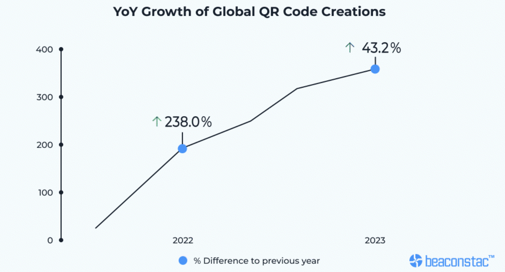

Phishing
Phishing er en svindelmetode som går ut på at en aktør prøver å få tak i sensitiv informasjon gjennom å fremstå som en legitim kilde. Dette tar som regel form gjennom SMS-er eller e-post som sender offeret til en nettside som kontrolleres av svindleren. Videre kan svindleren forsøke å stjele personlig informasjon og passord fra den som har blitt lurt inn på den fiendtlige nettsiden. Dette er dermed sterkt knyttet opp mot sosial manipulasjon, fordi svindleren må forsøke å "lure" offeret med forskjellige typer agn.
Social engineering
Social engineering eller sosial manipulasjon er en metode svindlere bruker for å bygge tillit hos et offer. På sitt enkleste kan sosial manipulasjon for eksempel være at en svindler utgir seg til å være en pålitelig organisasjon. Tidligere har det vært relativt lett å gjennomskue at en svindler ikke var en pålitelig aktør ettersom nettsider eller lignende bevis ikke virket troverdige, men i nyere tid ser vi flere og flere eksempler på at svindlere klarer å lage meget troverdige kopier av kjente nettsider (Cisco,U.Å.). Disse eksemplene blir flere og flere. I 2023 advarte DNB om tilfeller av målrettet sosial manipulasjon, der svindlerne snakket godt norsk og i noen tilfeller brukte kvinnelige stemmer som et forsøk på å skape tillit (NRK.no, 2023).
Det finnes forskjellige typer angrepsvektorer innen phishing, hvorav "forskuddsbedrageri" er en av de mest kjente. Dette er i ofte i form av en mail med en forespørsel om å sende penger til en tredjepart. De fleste har hørt om "Nigerianske prinser" eller "en fjern slekting" som lover å sende penger i bytte mot bankinformasjonen din. Dette er en gammel og for det meste en utdatert form for phishing, da de fleste i dagens samfunn er godt kjent med denne formen for svindel og kan lett styre unna slike svindelforsøk. (Cloudflare.com, U.Å.).
En mer effektiv form for phishing i dagens samfunn er "nettside-forfalskning". Dette går ut på at en svindler utgjør seg for å være en legitim kilde og ber offeret om å gå inn på nettsiden og logge inn (Cloudflare.com, U.Å). Dette kan da være en nettside som er laget som en direkte kopi av nettsiden offeret er vandt med. På denne nettsiden kan da svindleren dokumentere innloggingsinformasjon, sensitive opplysninger e.l. og enten bruke dette eller selge dette videre.
QR-koder
QR-koder er to-dimensjonale koder som kan scannes for å motta informasjon. Dette kan være i form av nettsider, bilder eller lignende (digital.gov, U.Å). QR-koder kan brukes til mange forskjellige formål, og har blitt veldig vanlig i det offentlige rom. Man skal ikke lete lenge før man finner slike koder på Gløshaugen for eksempel. QR-koder har blitt utbredt som et resultat av at de er meget lette å produsere, og dermed blitt en veldig populær måte å peke folk i retning av informasjonen man ønsker å formidle.
Spør deg selv - Hvor mange QR-koder har du sett i dag?
Hvorfor lære om QR-koder?
Det er viktig å få en bedre forståelse for hvordan QR-koder funker, da det kommer flere av de rundt oss. QR-kode leverandøren Uniqode forteller at antall QR-koder som blir laget har økt med hele 238.06% siden 2021 (Prakkat, 2024). Økingen er visualisert i Figur 1.

Grunnen til at bruk av QR-koder har økt er på grunn av COVID-19. Det kom et behov for kontaktløse løsninger. Alt fra betalinger til menyer ble det brukt QR-koder til (Prakkat, 2024). Videre har QR-koder blitt brukt for å forbedre brukeropplevelsen. Det gjør det lettere å finne informasjon og kan spare materialet som papir til en meny.
Quishing
Dette er en form for phishing der svindleren benytter seg av QR-koder for å lure offeret inn på falske nettsider der de kan stjele pålogging- eller betalingsinformasjon. Det er meget lett å lage QR-koder og man kan selv bestemme akkurat hvor koden skal sende deg (Martinsen, 2024). Man kan alltids se URL-en til nettsiden man vises til når man scanner en QR-kode. I mange tilfeller er dette trygghet nok til de som scanner QR-koden, da man lett ser om URL-en stemmer overns med hva man scanner.
Her kommer derimot sosial manipulasjon inn i bildet. Dersom en står i situasjoner påvirket av dårlig tid, alkohol eller distraheres av ting rundt seg, vil det være lett for svindlere å skape rammer rundt QR-koden for å få noen til å scanne den og bli lurt. Det finnes mange slike eksempler på Gløshaugen campus. QR-koder henger overalt på campus, og det er ikke alltid like lett å være klar over hva man scanner. Det kan være at man scanner QR-koder til bedrifter eller organisasjoner som ikke er så godt etablerte og dermed kan det hende at URL-en ikke ser kjent ut.
Økningen av QR-koder gjør også at quishing øker. I 2024 var det en 270% økning av quishing hver måned (keepnet, 2024). Dette viser at flere angripere bruker QR-koder som et verktøy til phishing.